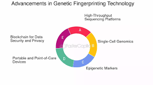
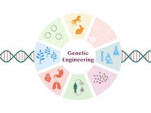

Overview
Genetic engineering is a field that has seen significant advancements in recent years. From CRISPR technology to gene therapy, these innovations are transforming our understanding and manipulation of genetic material. This page explores the latest breakthroughs in genetic engineering and their implications for various fields.
Key Advances in Genetic Engineering
- CRISPR-Cas9: This revolutionary technology allows for precise editing of DNA, making it possible to target and modify specific genes quickly.
- Gene Therapy: Advances in gene therapy techniques have shown promise in treating genetic disorders by correcting faulty genes.
- Synthetic Biology: The creation of synthetic organisms and biological systems has expanded the possibilities of genetic manipulation.
- Genome Sequencing: Rapid advancements in genome sequencing technologies have made it easier and more cost-effective to map the genomes of various organisms.
- Gene Drives: These technologies enable the spread of specific genetic modifications through wild populations, offering potential solutions to issues like vector-borne diseases.

Applications of Genetic Engineering
Genetic engineering has a wide range of applications across various fields:
- Agriculture: Genetically modified organisms (GMOs) are developed for improved crop yields and resistance to pests and diseases.
- Medicine: Genetic engineering plays a crucial role in developing new therapies for genetic disorders and improving vaccine efficacy.
- Environmental Science: Genetic modifications can be used to create organisms that help in bioremediation and conservation efforts.
- Industrial Biotechnology: Engineered microorganisms are used for the production of biofuels, enzymes, and other industrial products.

Ethical Considerations in Genetic Engineering
The advancements in genetic engineering raise several ethical questions:
- Genetic Modification: The implications of modifying the human genome raise concerns about unintended consequences and "designer babies."
- Biosecurity: The potential misuse of genetic engineering technologies for harmful purposes poses significant biosecurity challenges.
- Environmental Impact: The long-term effects of releasing genetically modified organisms into the environment are still not fully understood.
- Equity and Access: The accessibility of genetic engineering technologies may create disparities in healthcare and agriculture.